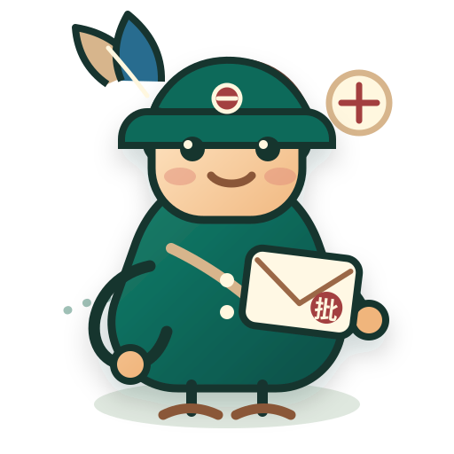

路线总览
按旅行时间、空间线索和兴趣主题选择路线，再进入地图查看站点详情。

文化吉祥物
侨批小信使「批批」
它是一位圆润的 Q 版侨批小信使，用旧纸米黄、朱红印章、墨绿和褐色邮路组成，怀里抱着带红色“批”印章的侨批信封，把远方的家书送回侨乡。
圆润 Q 版
红批印章
侨批色调
侨批信封
一封家书，一路乡音。
互动选择
路线助手
推荐路线
时间
交通
兴趣
时间
距离
交通
旅行线索
把一封侨批，走成一条路
侨批不是只在展柜里的文献。它连接寄信人、批局、港口、家族宅院和回乡建设，适合用“读信、看城、进侨乡”的方式慢慢展开。
在展馆里看信封、批脚、银信凭据，先理解侨批如何跨洋到达家乡。
沿老城、邮政旧址和海岸线，把通信网络放回真实的港口城市里。
到侨乡看祠堂、宅第和古港，观察侨汇如何进入地方生活与建设。
出行建议
先老城，再进侨乡
第一次游览建议从汕头老城半日线开始；如果有一整天或两天，再把路线延伸到澄海侨乡、泉州、厦门和漳州。